Part 1
Detailed Description
4D, 5D
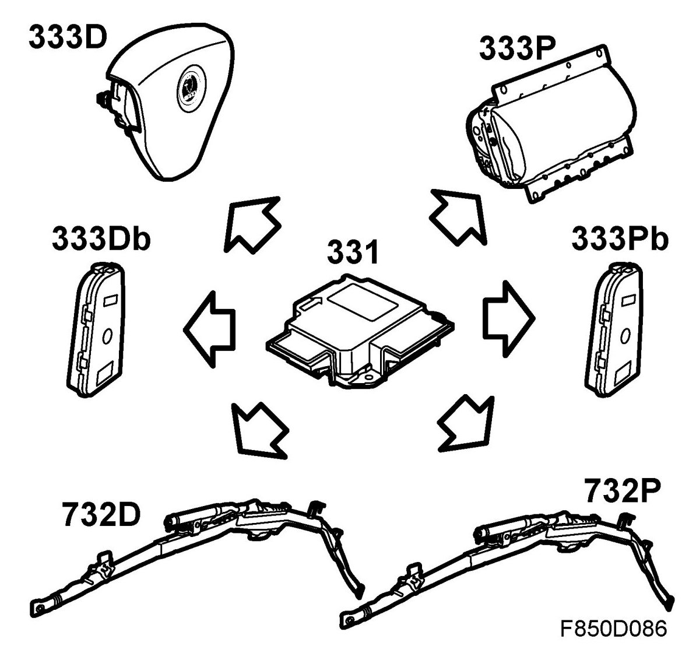
CV
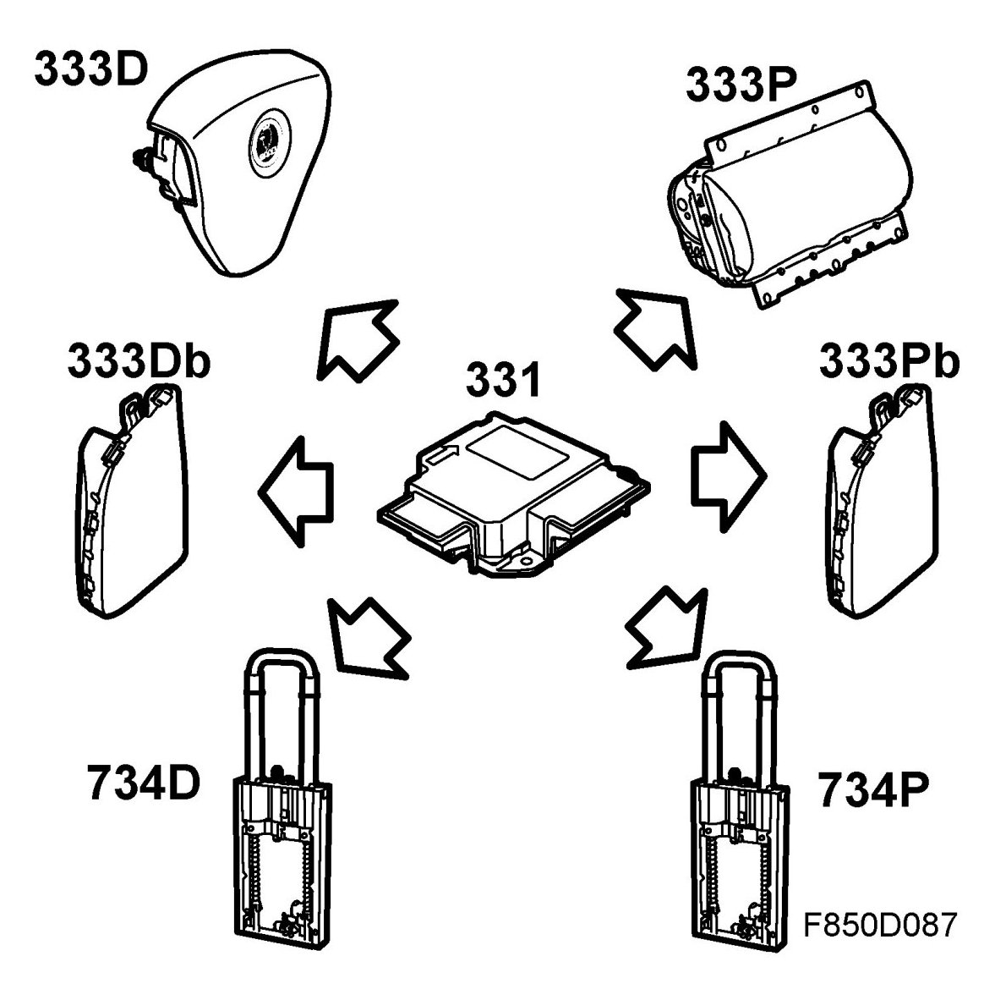
ACM (Airbag Control Module)
The control module has the capacity to activate 16 detonation circuits and contains two integrated accelerometers. The primary (1) accelerometer measures acceleration and deceleration forces longitudinally and laterally. The secondary (2) accelerometer measures longitudinal acceleration forces only.
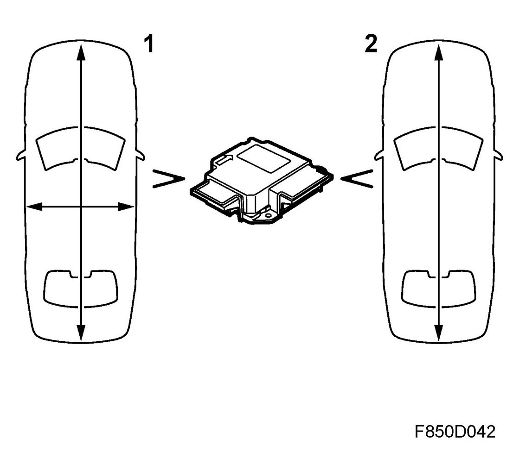
CV: The control module has a roll-over function which means it can measure angle changes. Angle changes are registered through an extra sensor in the control module.
Four side impact sensors send information to the control module regarding side impact intensity and diagnostics. The side impact sensors deploy a side airbag and an inflatable curtain on the side registering an impact.
Conditions
The system can be activated at several levels based on the impact force, seat position and use of belts. It is activated individually for the driver and passengers, which means that different decisions can be made for action depending on the seat position and whether or not the belt is in use.
The front airbags are activated in step 1 or step 2 under different impact forces.
Step 1 means a low force impact and step 2 a high force impact. The front airbag is activated earlier if the seatbelt is not fastened.
CV: The roll-over function measures the angular velocity with a gyro and is dependent on the vehicle speed.
Front collision:
At low force impact, the belt tensioners are used. One condition for activation of the driver and front-seat passenger belt tensioners is that the belt is in use.
If the impact force is greater, the front airbags are also activated in step 1 or step 2.
Step 1:
At this level, the battery disconnect switch and the first of the two stages of the front airbags are also activated, which means that around 70% of the maximum pressure is attained.
Step 2:
4D, 5D: At high impact force, the inflatable curtains and the second stage of the front airbag are activated. CV: At high impact force, the roll bars and the second stage of the front airbag are activated
Stage two is activated after a 5 to 20 ms delay after stage one in order to maximise protection. Activation of stage two presumes that stage one (70% of max. pressure) and the charge for stage two (during which the remaining 30% of the max. pressure is used) have been triggered. Stage two is only triggered if the seat is more than 30% from its frontmost position. This applies driver's seats in all markets as well as passenger seats in some markets.
In situations where the front airbags are only activated in stage 1, there will be a safety activation of stage 2 after 100 ms for the passenger and 50 ms for the driver irrespective of seat position. This is done to disarm the airbag and ensure there is no charge left after the crash.
Side impact
4D, 5D: In the event of a side impact, only the side airbag and inflatable curtain on the side of the impact will inflate but all belt pretensioners are activated. A precondition for the driver and passenger belt pretensioner being activated is that the belt is being used.
CV: In the event of a side collision the appropriate side airbag is activated and both roll bars are raised. The side air bag protects both the head and the torso. All the belt pretensioners are activated. A precondition for the driver and passenger belt pretensioner to be activated is that the belt is buckled up.
Backup power
The control module is equipped with a built-in backup power source which provides voltage for 150 ms after the normal power supply has been disconnected. The function has three capacitors which maintain system current and allow for front airbag deployment during the 150 ms interval. The side impact sensors are disabled in order to save energy. During the time interval, bus communication occurs continuously.
Driver airbag
There is a gas generator and a nylon fabric bag on the driver side. The gas generator is bolted in a thermosetting plastic housing. The airbag is protected by a plastic casing with notches that is fitted to the plastic housing. The airbag has a volume of about 60 liters.
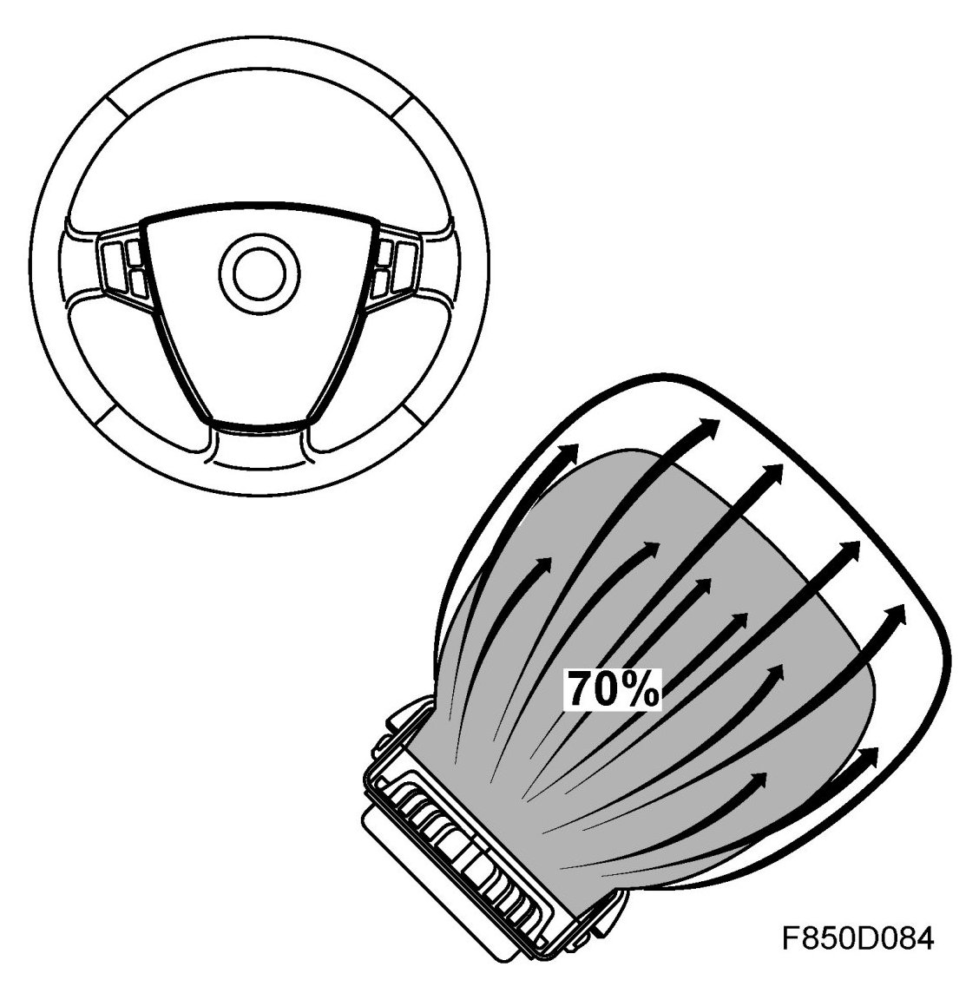
The airbag is of a two stage type. This means that it can be activated in two stages with different pressures depending on the force of impact and the position of the seat. The airbag consists of a thermosetting plastic housing, two electric detonators with different codings and two pyrotechnical charges with different amounts of powder for stages 1 and 2 as well as a filter.
Driver airbag gas generator
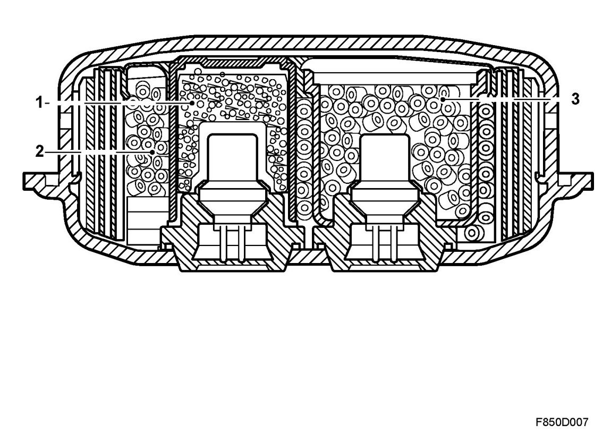
1. Initiator
2. Gas generator, 70%
3. Gas generator, 30%
The gas generator is split into two stages. These stages are divided into a primary stage of 70% and a secondary stage of 30%. Depending on the information the control module receives from the different sensors, the two stages are activated after different time delays. See control module information.
The gas generator consists of an alloy housing, an initiator (1), two electric detonators, two explosive charges and a filter.
The primary stage (2) contains a 24 g charge and the secondary stage (3) contains a 6.7 g charge. When an activation command is received, the control module sends a current pulse to the detonators, which ignites the charges and produces a gas. The filter cools and purifies the gas before it is released into the bag.
Passenger airbag
A passenger airbag is standard equipment for all models. It is mounted in the dashboard and steering wheel member above the glove box on the passenger side and is connected to the control module. See control module information for conditions.
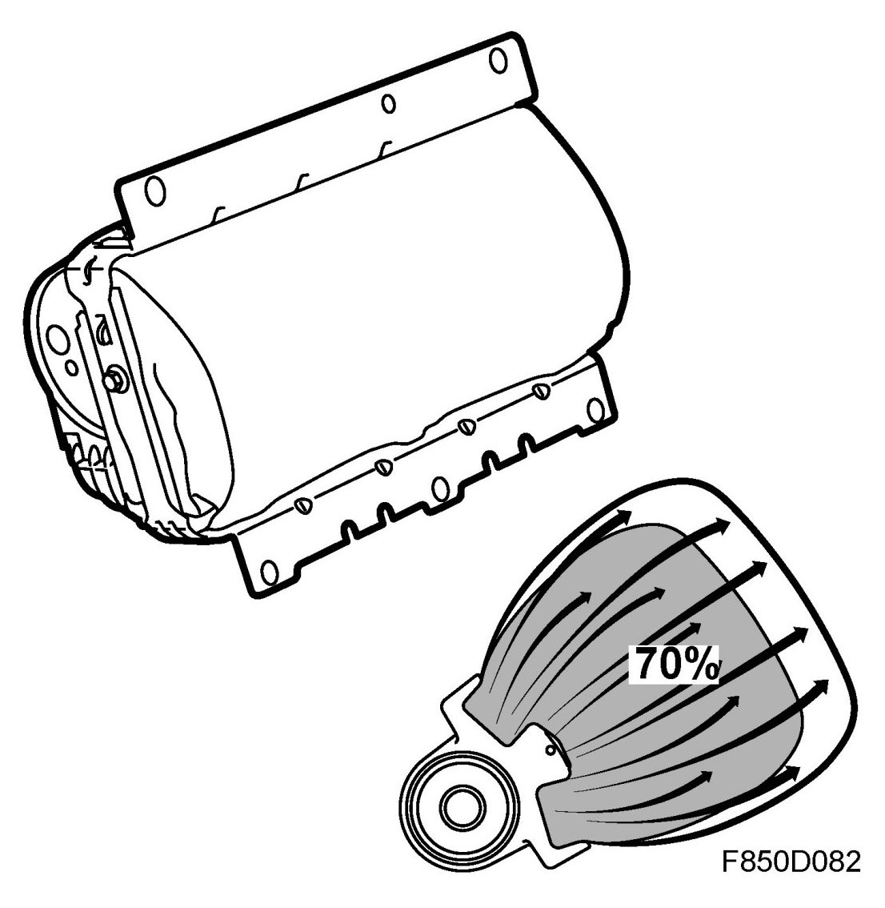
Passenger airbag gas generator
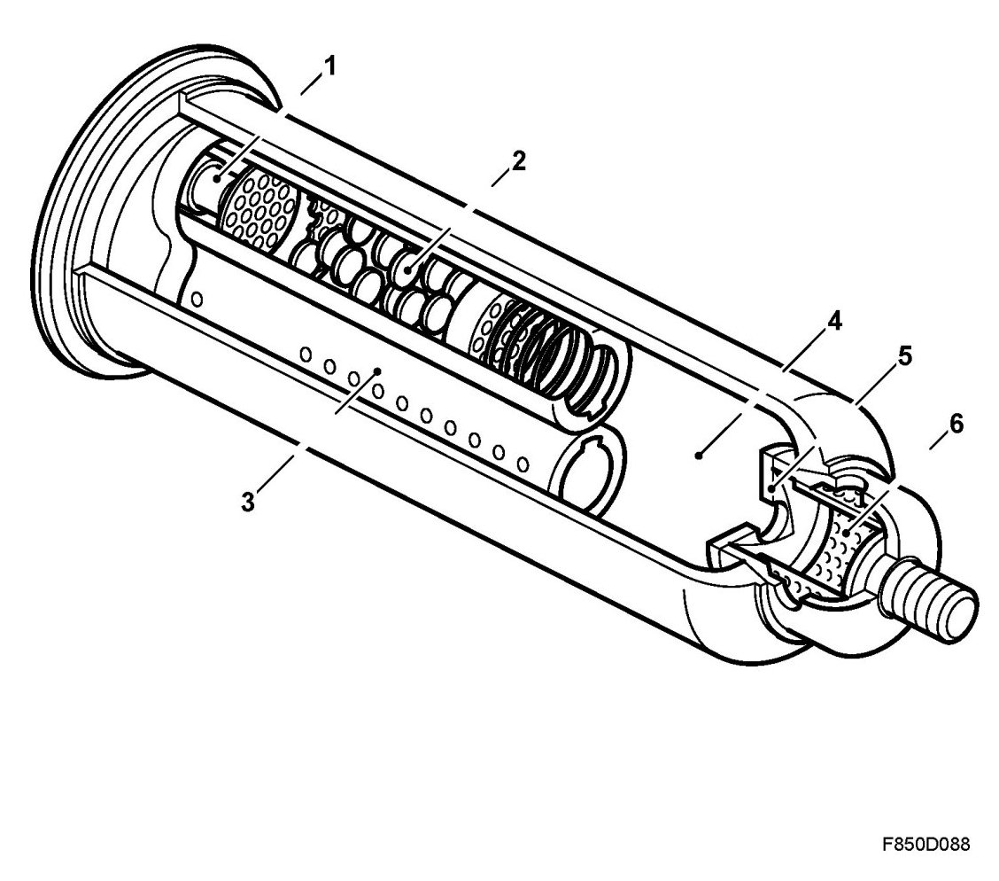
1. Detonator
2. Driver charge, gas generator 70%
3. Driver charge, gas generator 30%
4. Gas cartridge
5. Diaphragm
6. Gas distribution unit, filter
The passenger airbag contains a gas generator and airbag with a volume of approx. 101 liters. The gas generator is screwed to the airbag housing, which in turn is screwed to the dashboard. A scored sheet of foil holds the airbag in place. The dashboard contains corresponding scores.
The gas generator consists of a steel housing with two electric detonators, two explosive charges with different amounts of propellant for stages one and two, pressurised gas and a gas distribution unit.
The dual-stage gas generator includes a primary stage of 70% of the pressure and a secondary stage of 30%. Depending on the information received by the control module from the various sensors, the two stages are ignited after different intervals. See control module information for conditions.
After a command for activation, the control module energises the detonators (1), which ignite the charges (2 and 3). A charge of 28.4 g (2) is ignited in stage 1 and a further charge of 4.3 g (3) in stage 2. The compressed gas expands due to the heat that is generated and passes a gas distribution unit (6) before it continues to the bag.
The gas mixture consists of
- 98% Argon
- 2% Helium
Switch, passenger airbag (733)
4D, 5D
A system for passenger airbag cut-off can be obtained as an option. The passenger airbag is shutoff with a switch, system status is indicated on the switch panel. It should be emphasised that the switch is connected to the airbag control module and is not connected to the ignition circuit for the passenger airbag.
In order to increase reliability and enable diagnosis of the switch a resistor at 300 ohms is connected in parallel with the switch, and in series with this is a resistor at 100 ohms. The switch thus provides a total resistance of 100 ohms when it is closed and 400 ohms when it is open. This means that the airbag control module can detect a short circuit between the wires (very low resistance) or open circuit (infinitely high resistance) in the circuit and can distinguish this from the normally occurring values of 100 or 400 ohms. 100 ohms corresponds with a connected passenger airbag and 400 ohms with it cut-off.
The control module's input pin 13 has an AD converter and pull-up resistor to B+. The switch's resistance value of 100 or 400 ohms provides two well-defined voltage values on the AD converter's input. These are interpreted by the processor as switch position ON or OFF. All other voltage levels are interpreted as incorrect or unreasonable position in the switch.
Switch panel (737A)
Passenger airbag status (connected/disconnected) is shown by the indication in the switch panel 737A. The switch panel contains two LEDs to indicate status, they are supplied with B+ voltage internally in the switch panel and are grounded by the airbag control module when the LED in question shall be illuminated.
Front impact sensor
The front impact sensors detect possible impact intensity at an early stage and send information to the control module. The front impact sensors send digital information containing the status message for diagnosis and the acceleration value in 120 levels to the control module via the lead. The control module performs a calculation and decides whether to activate the detonators. If the front impact sensors are not functioning, the airbags are still activated but with a slightly later detonation. See control module information. The front impact sensors are black.
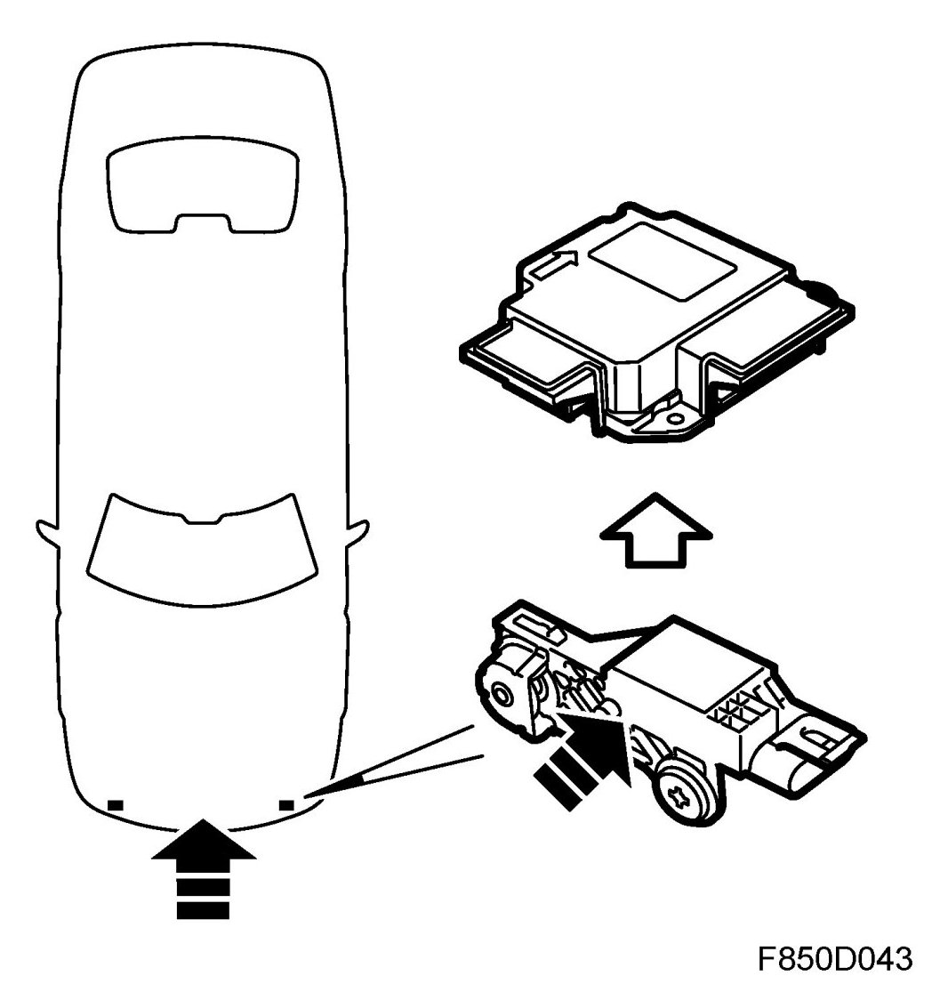
The front impact sensors communicate by modulating the continuous voltage feed from the airbag control module which means that the sensors use more or less current. Changes are registered by a microprocessor in the control module.
1. Identification message - during start-up
2. Status message for diagnostics every 220 ms (as an information packet).
Inflatable curtain, 4D
The inflatable curtain consists of a nylon bag with an approximate volume of 17 liters and a gas generator. During a side impact, the gas generator fills the curtain with gas. By forcing away the headlining, the curtain is positioned within approximately 20 milliseconds and provides passengers in the front and rear seats with effective safeguard against head injury and glass fragments.
The inflatable curtain is a part of the entire protection system available in the event of a side collision. The protection is supplemented by a side airbag for the driver and front seat passenger. During a side impact, the inflatable curtain is activated to provide head protection for front and rear seat passengers and a side airbag is activated for the driver and front seat passenger on the side of the impact.
The inflatable curtain is also activated in the event of a head-on collision when stage 2 is activated.
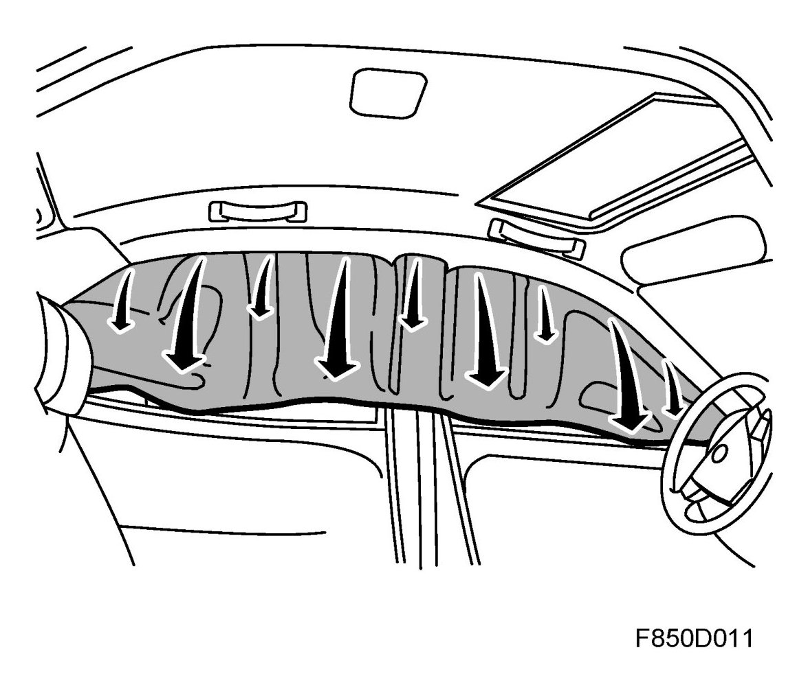
The inflatable curtain is located under the headlining along the roof member from the A-pillar to the C-pillar and is mounted in the body with four screws and three clips. Fixation clips A and B as well as the third clip are removable and should be replaced if damaged.
Inflatable curtain, 5D
The inflatable curtain consists of a nylon bag with an approximate volume of 30 liters and a gas generator. During a side impact, the gas generator fills the curtain with gas. By forcing away the headlining, the curtain is positioned within approximately 20 milliseconds and provides passengers in the front and rear seats with effective safeguard against head injury and glass fragments.
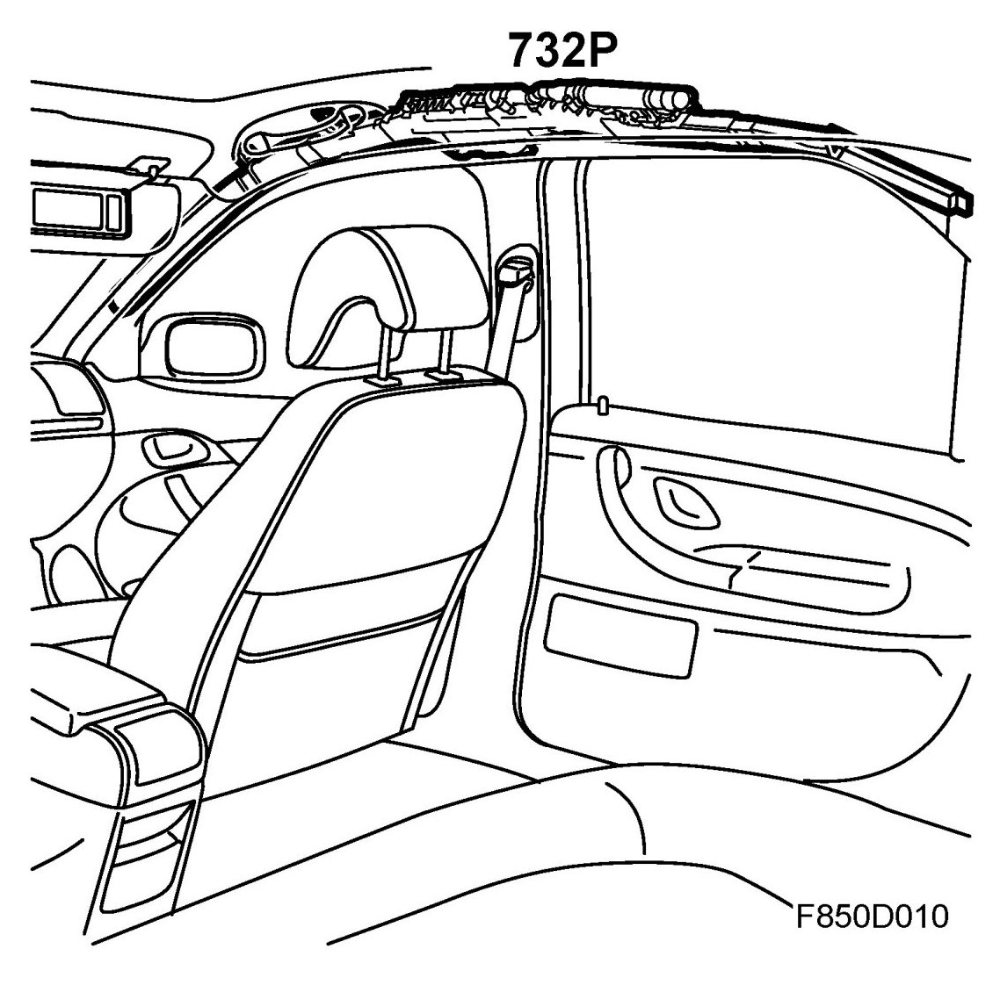
The inflatable curtain is a part of the entire protection system available in the event of a side collision. The protection is supplemented by a side airbag for the driver and front seat passenger. During a side impact, the inflatable curtain is activated to provide head protection for front and rear seat passengers and a side airbag is activated for the driver and front seat passenger on the side of the impact.
The inflatable curtain is also activated in the event of a head-on collision when stage 2 is activated.
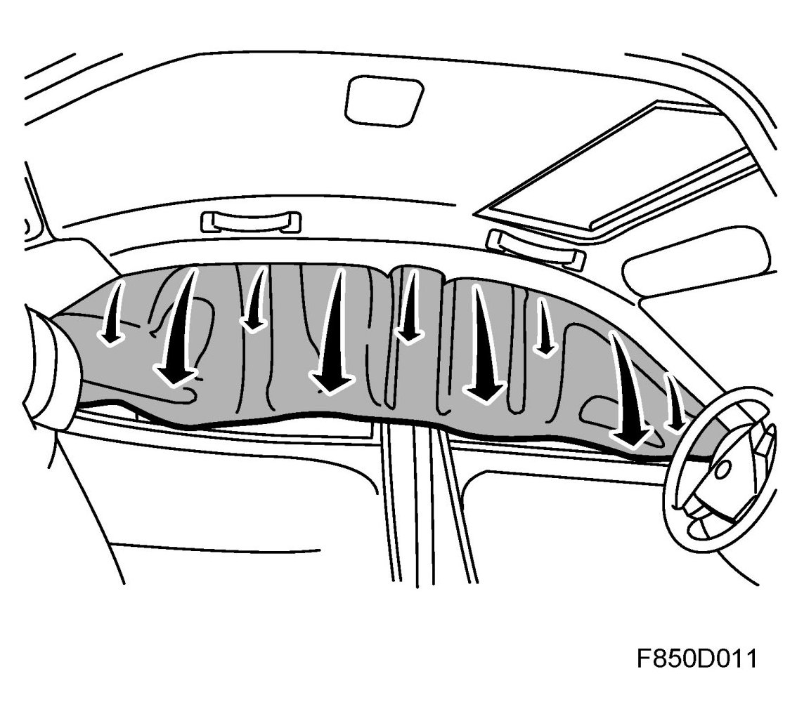
The inflatable curtain is located under the headlining along the roof member from the A-pillar to the C-pillar and is mounted in the body with two screws, three nuts and three clips. The clips are exchangeable and should be replaced if damaged.
Inflatable curtain gas generator, 4D
The gas generator is mounted on a metal bracket which rests on the rear courtesy handle bracket. Gas is forced into the inflatable curtain through a steel pipe during deployment.
The gas mixture in the gas generator consists of 70% argon, 20% nitrogen oxide and 10% helium. The charge contains 0.5 grams of propellant.
When the gas generator is activated, the initiator (1) receives voltage and ignites the charge. The charge causes the inner diaphragm (3) to burst and the energy starts a chemical reaction inside the chamber (2).
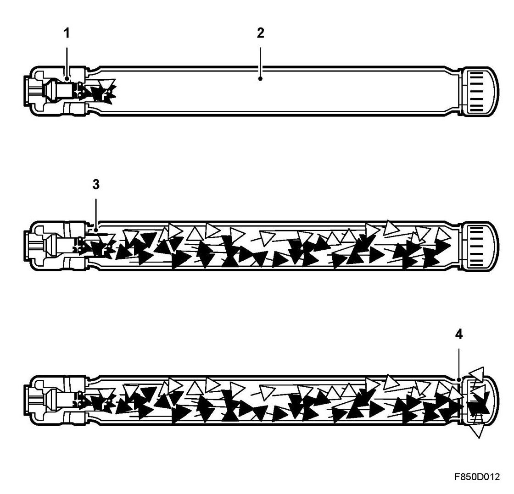
When the gas begins to react, the pressure inside the chamber increases, causing the outer diaphragm (4) to burst so that the gas can flow out via a gas distributor and fill the inflatable curtain.
Inflatable curtain gas generator, 5D
The gas generator is mounted on a plastic housing that is fastened to the B-pillar. When activated, the gas passes into the inflatable curtain through a plastic tube.
The gas mixture in the gas generator consists of 97% argon, 3% helium. The charge contains 0.5 grams of propellant.
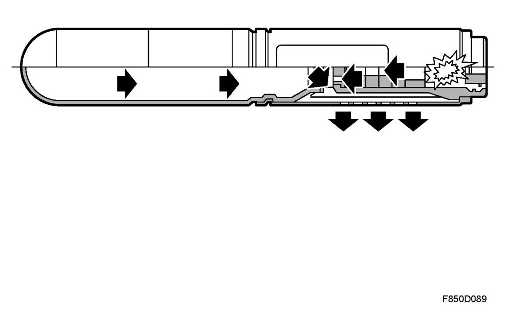
The following happens when the gas generator is activated:
- An electric pulse melts an electric jumper, which initiates the detonation of the pyrotechnical charge in the chamber.
- The temperature rises during the detonation
- Pellets generate a gas that flows out of the combustion chamber jets in a heated state.
- A metal disc ruptures on the other side of the combustion chamber and the stored cold gas (97% argon and 3% helium) flows out.
- Cold and hot gas is mixed in the filter chamber and the mixed gas is filtered and flows out to fill the inflatable curtain
Side airbag
The purpose of the side airbag is to reduce the effects of a side impact on the person sitting on the side involved in the collusion. This is achieved by an airbag which inflates between the passenger's upper body and the door. CV: The side airbag protects both the head and the upper body.
4D, 5D
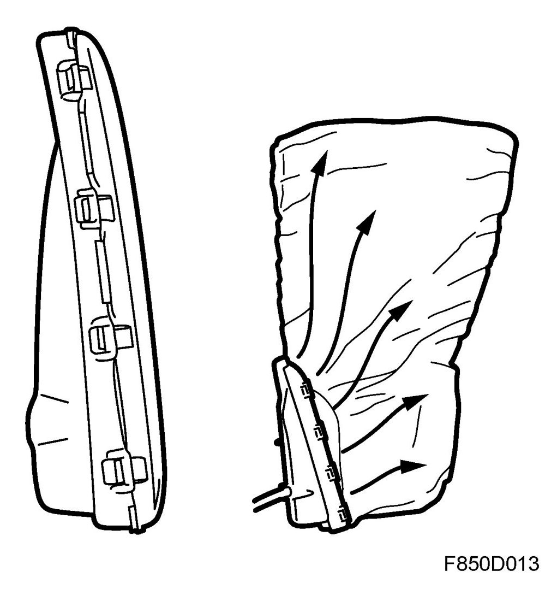
CV
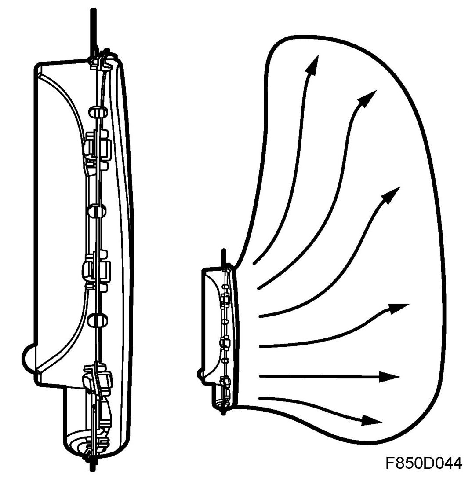
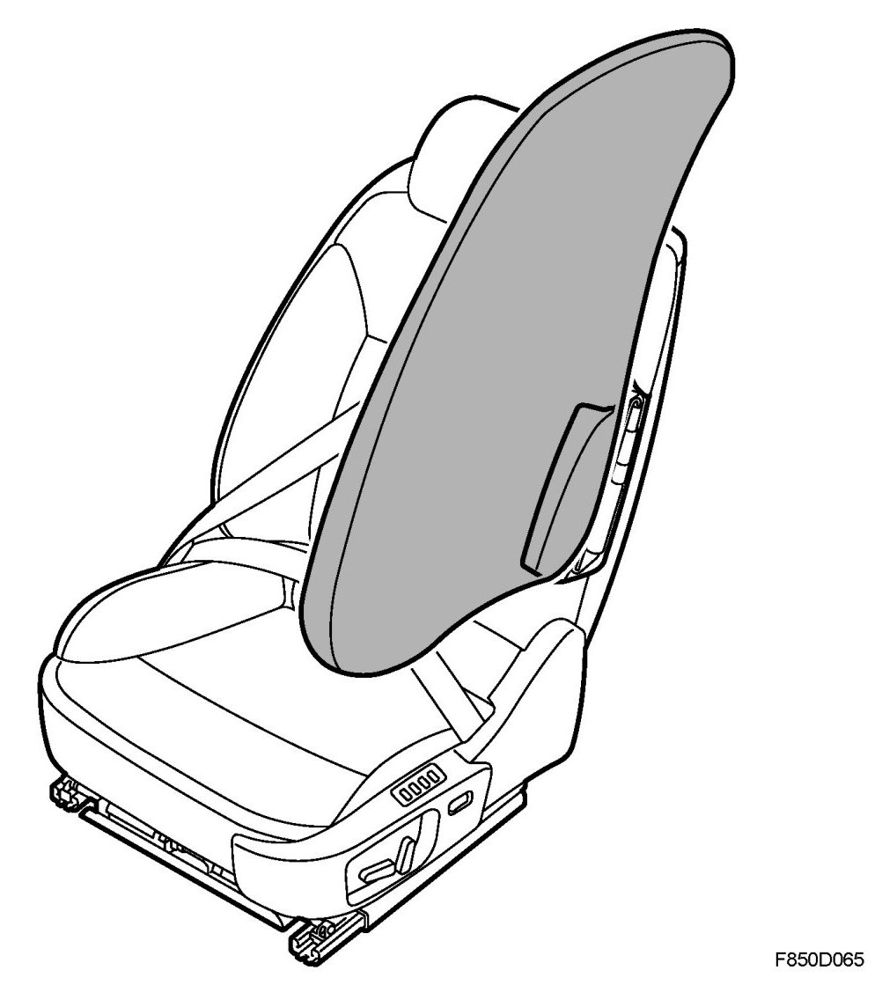
4D, 5D: This protection is supplemented with an inflatable curtain, which provides head protection for the driver and front and rear seat passengers. In the event of side impact an inflatable curtain is activated to protect the heads of the driver and front and rear seat passengers.
The side airbag is activated for the driver or front seat passenger on the side where the crash has occurred. In the side airbag there is a gas generator and a bag. The bag has a volume of approx. 9 liters (approx. 20 liters for CV). The bag and gas generator are protected by a plastic case with clips, which opens on activation.
The side airbag is available in different variants depending on the market and the location of the steering wheel in the vehicle.
Side airbag gas generator
The gas generator consists of a steel housing, electric detonator, explosive charges with different amounts of propellant for stages one and two, pressurised gas and a gas distribution unit for gas cooling and pressure distribution.
When a deployment command is received, the control module sends a current pulse to the electric detonator which starts fuel combustion. When the electric detonator (1) is activated, the explosive charge is ignited (2). The charge expands and forces a projectile (3) through the diaphragm (4) to the pressure vessel (5) due to the pressure and heat build-up. The gas is mixed with the charge, which expands due to the increase in heat. The pressure forces a diaphragm (6) to burst in another part of the gas generator and the gas flows into the bag via a gas distributor.
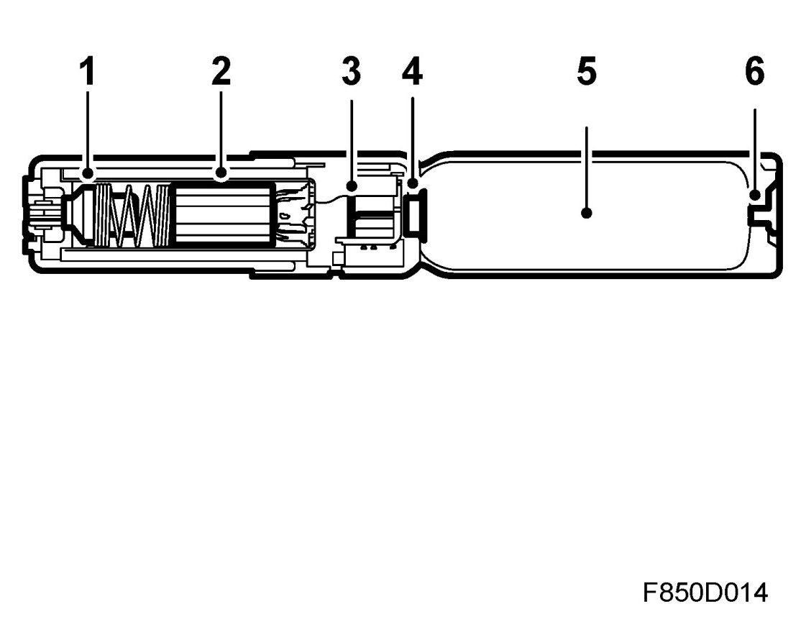
The gas mixture is 95% argon and 5% helium.
Gas pressure: approximately 350 bar.
1. Detonator
2. Charge
3. Projectile
4. Diaphragm, inner
5. Pressure chamber
6. Outer diaphragm and gas distributor